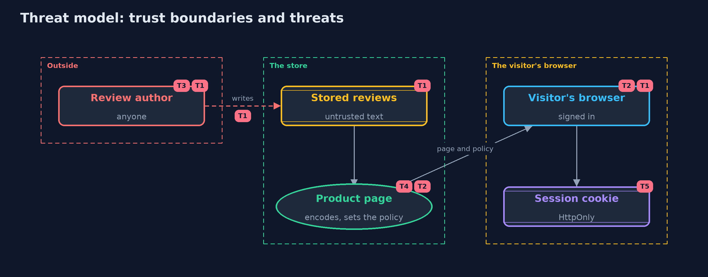

Threat Model — Cross-Site Scripting: Output Encoding and CSP
A threat model answers four questions: what are we protecting, who or what could harm it, how, and what do we do about it. This one covers this project's own demo system, not a production deployment. Domain: an online store.
Scope
How an online store's product page shows reviews written by customers: storing them, writing them into the page in four contexts, the policy that limits scripts, and the session cookie. It covers anyone who can write a review, and signed-in visitors who read it. It does not cover rich-text sanitizing, front-end frameworks, or other injection kinds.
What we protect (assets)
- Visitors' sessions and what they can do while signed in.
- The integrity of the product page.
- The trust customers place in what the page shows.
Who and what acts on the system
- Customers who write reviews, any of whom may be hostile.
- Signed-in visitors who read the page.
- The store's developers, who add new places that show user text.
Trust boundaries
A trust boundary is a line that data or a request crosses between parts that trust each other differently. Threats cluster where those lines are.
- Customer to stored review: anything can be written.
- Stored review to page: the point where text must be encoded for its context.
- Server to browser: the policy and cookie flags travel with the response.

Each dashed box is a trust boundary. A rose tag such as T1 shows where the threat of that number, in the table below, applies.
Threats, using STRIDE
STRIDE is a checklist of six kinds of threat: Spoofing (S), Tampering (T), Repudiation (R), Information disclosure (I), Denial of service (D), Elevation of privilege (E).
| Id | Kind | Threat | Where it shows up | Control in this project | What is left |
|---|---|---|---|---|---|
| T1 | Tampering | A review's text is read as markup or script, changing the page or running in visitors' browsers | ReviewPage.unsafe |
Contextual output encoding for every value | A place added later without its encoder; caught by the policy and by tests that look for unencoded output |
| T2 | Elevation of privilege | A script that slips through runs with the page's authority | the browser | A strict policy that allows only scripts carrying this response's nonce | Scripts the shop itself loads are trusted, so their sources must be controlled |
| T3 | Tampering | Input filtering changes honest reviews and misses contexts it was not designed for | NaiveFilter |
Store text as written and encode on output | None, once the filter is removed |
| T4 | Information disclosure | A reused or predictable nonce lets injected content carry it | ContentSecurityPolicy.newNonce |
128 random bits from a secure source, new for every response | A shared cache that stores a page with its nonce, so such pages must not be cached publicly |
| T5 | Information disclosure | A script reads the session cookie and sends it away | the session cookie | HttpOnly, Secure and SameSite on the session cookie | A script can still act as the visitor while the page is open, which is why encoding comes first |
Assumptions
- Every place that writes user text uses the encoder for its context.
- The nonce comes from a secure random source and is new for every response, and pages carrying it are not cached and shared.
- In the demo, the problem is shown with a harmless bold tag and the policy is evaluated in Java.
Out of scope
- Rich text that must allow some HTML, which needs a maintained sanitizer.
- Front-end code that writes HTML in the browser.
- SQL and other injection: other projects in this module.
How the tests check this
EncodeTestchecks each encoder, round trips, and that no value can end its context, in any locale.PageAndFilterTestchecks the unsafe and safe pages and the filter's two failures.ContentSecurityPolicyTestchecks the evaluator's rules, the nonces, and the real server's policy and cookie.DemoRunsTestcompares the whole demo with the golden output.
Where this model goes next
The tools version shows the same defences in Spring Boot, with a template engine that encodes by default and nonces from Spring Security. The next project in this module is cross-site-request-forgery.